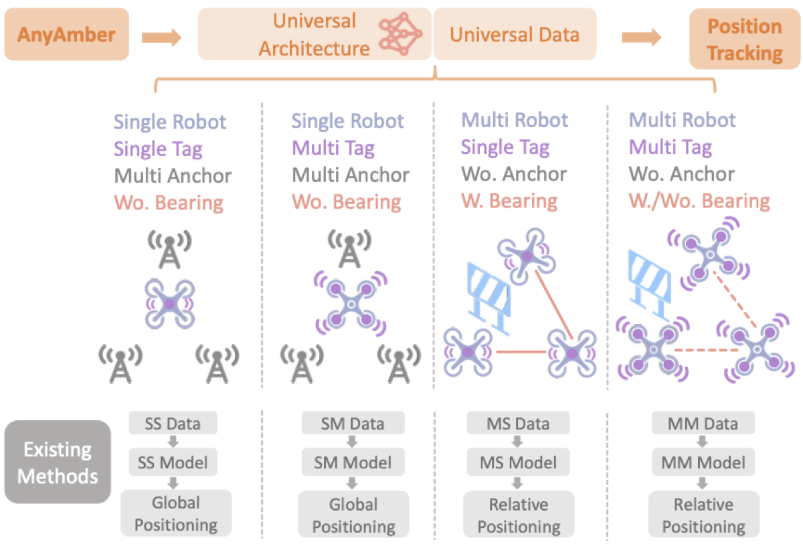

Biography
Si Wang 王斯
I am a Ph.D. student in the College of Control Science and Engineering at Zhejiang University, advised by Prof. Yue Wang and Prof. Rong Xiong. My research focuses on robotics, perception, localization, and world models, with an emphasis on learning-based localization and sensor fusion for robots operating in real-world environments.

Publications


Sparse Hierarchical LiDAR Bundle Adjustment for Online Collaborative Localization and Mapping
IEEE Robotics and Automation Letters, 10(6): 5561-5568, 2025.
News
- AnyAmber was accepted to Robotics: Science and Systems 2026 (RSS 2026).
- Mr. Virgil was accepted to IEEE/RSJ International Conference on Intelligent Robots and Systems 2025 (IROS 2025).
- Sparse Hierarchical LiDAR Bundle Adjustment was published in IEEE Robotics and Automation Letters 2025 (RA-L 2025).
- Neural Ranging Inertial Odometry was accepted to IEEE International Conference on Robotics and Automation 2025 (ICRA 2025).
- ZJUNlict won the RoboCup China Open 2023 Small Size League championship and the RoboCup 2023 Small Size League world runner-up.